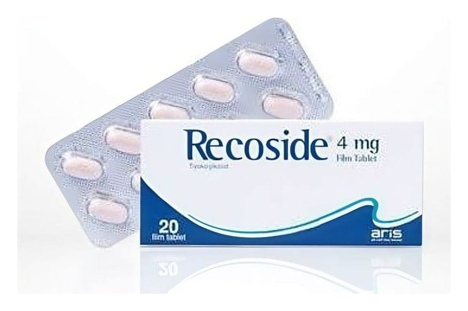

Recoside Plus 4 mg/500 mg Tablet, 20 Adet

Ne için kullanılır
KT · Bölüm 1RECOSİDE®PLUS, tablet formunda olup 4 mg tiyokolşikosid ve 500 mg parasetamol etkin maddelerini içerir. Her bir kutuda, 20 tablet bulunur. Tabletler, sarı renkli, bir yüzünde “4+” ibaresi bulunan, diğer yüzü düz oval tablet şeklindedir.
RECOSİDE®PLUS; kas gevşetici ve ağrı kesici etkinliğe sahiptir. Yetişkinlerde ve 16 yaştan itibaren ergenlerde ani ortaya çıkan omurilik kaynaklı kas spazmlarının (kasılmalarının) ek tedavisinde endikedir.